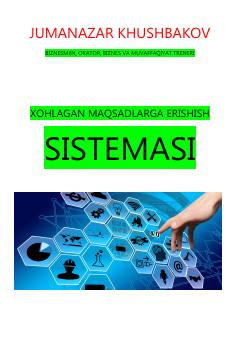

XMMaqsadlarga erishish va hayotda muvaffaqiyat qozonishning samarali tizimi haqida qo'llanma.
Ushbu kitobda muvaffaqiyatga erishishning o'ziga xos retseptlari, maqsad qo'yish tizimi va inson hayotini o'zgartirish strategiyalari bayon etilgan. Muallif Jumanazar Khushbakov dunyoning yetakchi trenerlari tajribasiga tayangan holda, moliyaviy mustaqillik va shaxsiy rivojlanish yo'llarini ko'rsatib beradi.